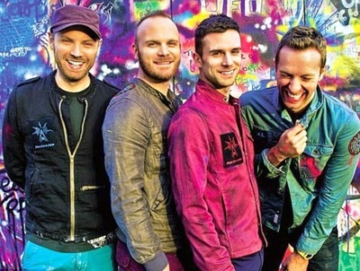
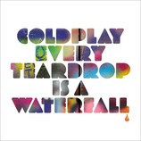
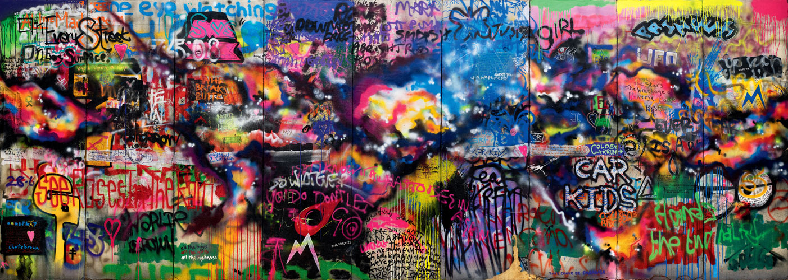
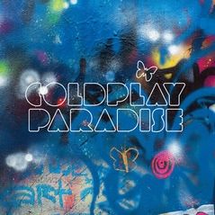
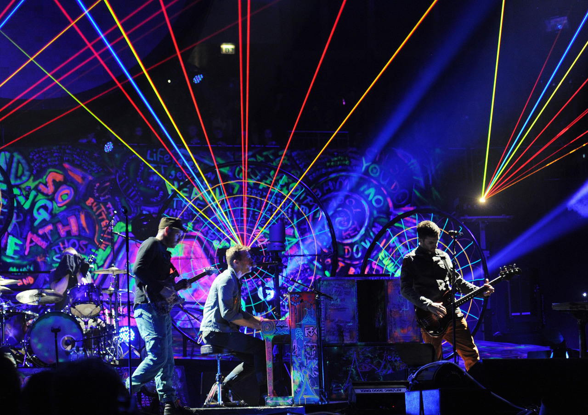
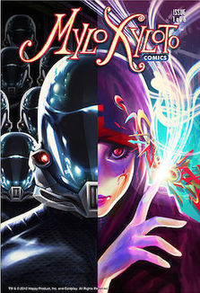

Mylo Xyloto: Historia

Tras ciertos rumores de que Viva la Vida or Death and All His Friends sería el último álbum de la banda, Coldplay desmintieron la información. En diciembre de 2008 la banda ya inició los preparativos para su próximo álbum. La primera grabaciones tuvieron lugar en una antigua panadería al norte de Londres. El grupo ya había grabado su último álbum allí. Más tarde se trasladaron a otro estudio cercano llamado The Beehive.
Brian Eno ejerció de productor por segunda vez. El productor animó a la banda a probar un estilo diferente. Al tomar este camino, proceso de grabación se extendió más de lo esperado. Fruto de la experimentación surgió la idea de hacer un álbum más íntimo y acústico, similar a sus primeros trabajos. Luego se barajó la posibilidad de hacerlo más electrónico. Incluso estuvieron a punto de unir los dos conceptos para hacer un doble álbum.
El proceso del álbum fue finalmente basado en electrónica, pero algunos temas aun conservan su esencia acústica.
En un principio el álbum iba a ver la luz en 2010. Sin embargo se tuvo que retrasar al año siguiente debido a la larga duración de la gira Viva la Vida Tour.
Cuando llegó 2011, hubo que esperar hasta finales de primavera para que aparecieran los primeros adelantos. El primero fue el EP Every Teardrop Is a Waterfall.

La canción funcionó bien comercialmente. Sin embargo recibieron muchas críticas porque el parecido al tema Ritmo de la Noche del grupo Mystic. El grupo declaró que la canción, al igual que Ritmo de la Noche, fue inspirada por I go to Rio, compuesta por Peter Allen. Dicha canción cuenta con una melodía similar, pero con claras diferencias.
En agosto se pudo ver por primera vez el diseño que tendría este nuevo álbum.

Para el estilo de graffiti se inspiraron en la ciudad de Nueva York de 1970. Al contrario que Viva la Vida or Death and All His Friends, que presentaba una paleta de colores muy concentrada, la banda buscaba una explosión de colores.
En sus letras también se percibe la presencia de jerga relacionada con este arte urbano.
El último adelanto antes de la salida del disco fue en septiembre con Paradise. El sencillo fue el más vendido de la categoría rock en Reino Unido.

Mylo Xyloto fue lanzado el 24 de octubre de 2011. El disco vendió 122.000 copias en los tres primero días. En su primera semana ya era número uno en las UK Albums Chart. En Estados Unidos también tuvo buenas ventas. También fue número uno de el Billboard 200 y vendió 447.000 copias en la primera semana. Por otra parte, la crítica se dividió completamente. Mientras que revistas como Q, Spin o Rolling Stones alabaron el nuevo trabajo de la banda y su sonido renovado, otros medios como The Guardian, NME o Entertainment Weekly criticaron el disco por pecar de comercial e incoherente

La gira Mylo Xyloto Tour se inició antes de la llegada del álbum. En junio de 2011 la banda ya estaba tocando las canciones mostradas por todo el mundo. Al igual que el diseño del álbum, Coldplay escenificó en sus conciertos una mezcla de colores chillones, luces láser y pirotecnia. Todo ello hacía una mezcla muy potente en términos visuales.

Para seguir promocionando el álbum, Coldplay publicó una serie de cómics inspirados en Mylo Xyloto. Escritos por Mark Osborne y Dylan Haggerty, y dibujados por Alejandro Fuentes, nos cuenta la historia de Silencia, un mundo distópico donde dos personajes llamados Mylo y Xyloto tienen que luchar contra el gobierno dictatorial de Major Minus.
Tanto el álbum como el cómic tienen muchas referencias entre ellos.
Fuente: Play Feel